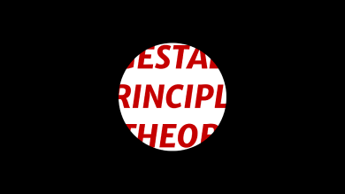

p.v.kushtan
home
works
blog
about
Applied psychology: Gestalt in design
Imagine: what if all stylizing technologies had SUDDENLY disappeared? What would everyone’s favorite instagram, twitter, youtube, netflix, pinterest etc look like? Let’s take a quick look.
